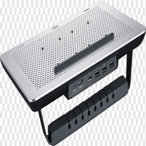
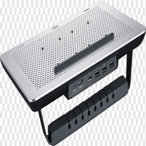

Se les dara a presentar los diferentes tipos de accsesorios que hay para nosotros mismo a la hora de usar alguna computadora o laptop.
Audifonos: estos accesorios son bastante comunes en la vida cotidiana ya que con ellos podemos escuchar cosas de manera personal ya sea conectandola a nuestro dispositivo movil, o nuestra computadora, para un uso mas comodo.
Teclados: es un accesorio bastente importante en nuestras computadoras, ya que con ella es la que podemos escribir, hay bastantes tipos de teclados desde el mas basico hasta el mas caro que esos teclados son mas especificos para la hora de jugar algun juego.
Mouse: es un accesorio muy mportante a la hora de tenr una computadora ya que con este accesorio podemos interactuar en la computadora y poder dar ordenes de que hacer, y al igual que el teclado esta desde el mouse mas basico hasta el mas caro que son igualmente especiales para juegos.
Entre otros accsesorios que sean importantes para poder tener un buen manejo de nuestras computadoras.

 
